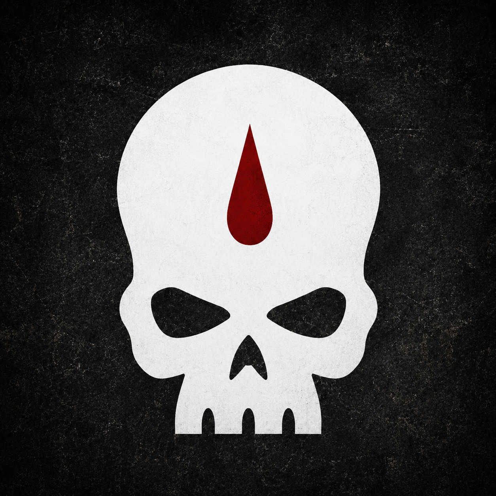

Countercharge
The Order strikes when enemy momentum becomes arrogance: Ork mobs surging through gates, Tyranid remnants flooding breaches, convoy lines collapsing, or shrine defenders beginning to break.
Warhammer 40.000 Homebrew Chapter
Ultima Founding sons of Sanguinius, consecrated after Baal and sent toward Armageddon as a fleet-based crusade of blood, ash, oath and witness.
Till 40k homebrew-hubbenChapter Identity
The Order of the Grail began as Sanguinius-line Greyshields among the Unnumbered Sons. Baal changed them. In the ruin left by Hive Fleet Leviathan, they learned that Primaris creation had not spared them from the Angel's grief; it had made them heirs to it.
Their culture is darker and harsher than the bright courts of older Baalite tradition: oxblood armour, black vows, bone-white death masks, ash-scripture, relic chains and the belief that the dead must remain witnesses. They are not replacements for the fallen sons of Sanguinius. They are proof that the burden continues.
Cawl made the vessel.
The Emperor gave it purpose.
Sanguinius marked it with blood.
Chapter Doctrine
The Order strikes when enemy momentum becomes arrogance: Ork mobs surging through gates, Tyranid remnants flooding breaches, convoy lines collapsing, or shrine defenders beginning to break.
Temporary crusade formations combine Phobos scouts, Tacticus anchors, Gravis purgation units, Bladeguard shields, Chaplains and Sanguinary Priests around a written vow.
Grail Knights and jump-pack cadres descend only where symbolism and violence must become one act: command slaying, shrine relief, dead recovery or morale restoration.
Honour Formations
Angelic honour guard and relic-bearers in bone-white death masks, black tabards and dark oxblood armour. They are the Chapter's young answer to sacred Sanguinary tradition.
Bladeguard and veteran defenders sworn never to abandon consecrated ground without command, witness and blood.
Gravis purgation warriors who advance with flame, melta, heavy bolt weapons and ash-reliquaries from worlds that could not be saved.
A judged champion, not a prophet. Hadriel Voss bears the relic power spear of Gathrog's Belt against warlords whose deaths may restore a front.
Notable Figures
Lord of the First Grail, bearer of Saturnine Terminator Armour and Baal's Pride.
Reclusiarch of the Black Chalice, guardian of vows, penance and Chapter identity.
High Sanguinary Priest of the Consecrated Vein, keeper of gene-seed and blood-records.
Chief Librarian and Keeper of the Veiled Grail, wary interpreter of visions.
Forge-Warden of the Pilgrim Fleet, master of the strained armoury and fleet repairs.
Captain of the Grey Unbent, loyal critic of zeal without strategic restraint.
Heraldry & Rites
The Chapter badge is a plain white skull with a single red blood drop upon the forehead, normally carried on a black left pauldron. Red marks Sanguinius' blood, black marks vow and judgement, bone marks the dead as witnesses, and antique gold marks inheritance as rare and dangerous.

Fleet, Enemies & Armageddon
The battle barge serves as fortress-monastery, reliquary, apothecarion vault, armoury, chapel complex and command throne for a Chapter with no homeworld.
A speed-and-armour Ork warlord of shrine-road desecration, looted engines and unfinished hatred. The Order's informal oath: his tread ends in ash.
On Armageddon, the Order is assigned to mobile counterassault, ash-waste interdiction, shrine-road defence, orbital drop-zone security and emergency stabilisation.
Chronicle
Fullständigt lore-arkiv
Laddar chapter-dokument...